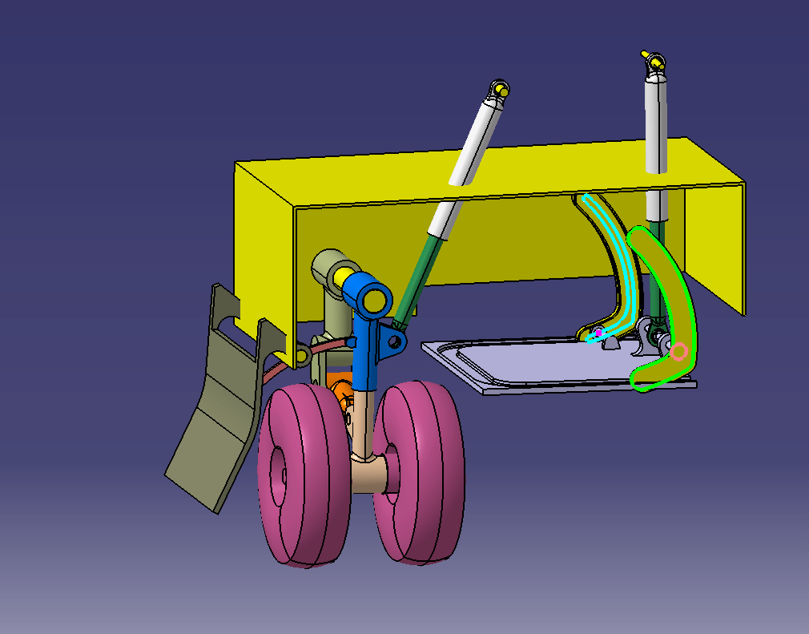

In this project, I created a kinematic model for a basic landing gear system, using CATIA V5's DMU Kinematics workbench. The primary objective was to simulate the movement of the landing gear mechanism and incorporate laws to control the motion of the landing gear to ensure precise deployment and retraction without collision of the moving components. The model was developed with an emphasis on mechanical accuracy and clearance control.
